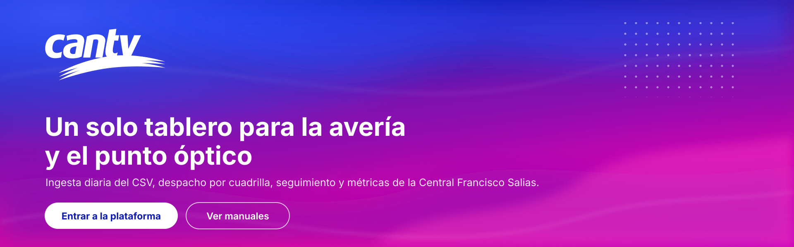

Institucional (color)
Fondos claros, documentos, manuales y pie de correo.

Propuesta de sistema de diseño
Evolución de app/web/src/styles.css a partir de la imagen de referencia
autogestión: el degradado azul eléctrico → violeta → magenta y la trama de puntos se usan como
superficie de marca; los datos siguen viviendo sobre superficies claras de alto contraste.
Tres versiones, siempre desde el vector institucional. La versión monocroma blanca es la única aprobada sobre el degradado, igual que en la imagen de referencia.
Fondos claros, documentos, manuales y pie de correo.
Superficies de marca: login, portadas, cabeceras y APK.
Una sola tinta (fax, grabados, sellos, marcas de agua).
Área libre equivalente a la altura de la «c» del logotipo. Ancho mínimo en pantalla: 96 px (barra superior) y 32 px en la barra lateral de la APK. Nunca deformar, ni recolorear el logotipo a colores distintos de los institucionales o del monocromo blanco/tinta.
Los siete colores de marca salen del k-means de la imagen de referencia
(recursos/paleta_referencia.json); los neutros y semánticos mantienen continuidad con la v1
para no reescribir las vistas existentes.
#021FBE26,7 % de la referencia · cabecera e iconos
#3B1CAD17,4 % · segundo tramo del degradado
#7C12AF10,6 % · centro del degradado
#9D0BAC9,0 % · transición cálida
#C905A514,0 % · cierre del degradado (5,19:1 con blanco)
#E003A0Esquina inferior · solo texto grande y gráficos (4,48:1)
#00B8C4Acento de interacción y foco sobre superficies de marca
#050B3DBase oscura: velo para garantizar contraste
#F4F7FC#FFFFFF#131A2A · 17,4:1#5A6684 · 5,7:1#1F7A4D#8A6100#B3261E#6A13A1Fondo de la superficie de marca (login, portadas).
Franja de 3 px: la firma de marca entre cabecera y contenido.
Cubiertas de tarjetas destacadas y botón de marca.
Cabeceras de tabla y estados de solo lectura.
Barra superior: garantiza 9:1 con el texto blanco.
26 px de paso, punto de 2,6 px al 55 %: el detalle de la referencia.
Archivo para titulares (aire bold institucional) e Inter para interfaz y cifras. Se sirven autoalojadas (o con la pila del sistema como respaldo) porque la plataforma opera en la intranet de la Central y no puede depender de Google Fonts.
max-width: 68ch).font-variant-numeric: tabular-nums para que las columnas no bailen.Autoalojar Inter y Archivo añade ~180 KB al paquete web. Alternativa: pila del sistema
(Segoe UI) sin coste. La propuesta funciona igual con ambas.
Todos los objetivos táctiles miden 44 × 44 px como mínimo, con estados hover, focus-visible, activo, deshabilitado y cargando.
Se enmascara para los roles sin permiso sobre el serial.
Debe empezar por 70 y tener 10 dígitos.
Cada chip lleva punto de color y texto: el estado nunca depende solo del color (daltonismo).
216 casos asignados a 9 cuadrillas.
Faltan 3 columnas obligatorias del contrato CSV.
Pruebe con el número de caso o el teléfono enmascarado.
Nunca emojis como iconos: rompen la alineación, cambian con la fuente del sistema y no heredan el color del estado.
Indicadores con cubierta de marca y tabla densa con fila de SLA. Las cifras grandes usan
tabular-nums y el progreso del SLA combina color y texto.
Casos activos
1 284
▼ 4,2 % vs. ayer
Sin asignar
216
▲ 12 requieren cuadrilla
Cuadrilla 0
87
Supervisor
SLO
93,6 %
meta 95 %
| Caso | Sector | Estado | Espera / SLA | Acción |
|---|---|---|---|---|
| A-48213 | Los Chaguaramos | Supervisor | 41 h de 48 h | |
| A-48176 | Prado de María | En espera | 46 h de 48 h |
Los contrastes se calcularon con scripts/contraste.py (fórmula WCAG 2.2) sobre la
paleta propuesta; el resultado queda en recursos/contraste.json.
| Combinación | Ratio | Veredicto |
|---|---|---|
| #131A2A sobre #FFFFFF | 17,37:1 | AA |
| #5A6684 sobre #FFFFFF | 5,72:1 | AA |
| Blanco sobre #0B1BB4 | 11,48:1 | AAA |
| Blanco sobre #050B3D | 18,72:1 | AAA |
| Blanco sobre #C905A5 | 5,19:1 | AA |
| Blanco sobre #E003A0 | 4,48:1 | Solo texto grande |
outline: none sin sustituto.prefers-reduced-motion detiene el degradado animado, el brillo de los esqueletos y el giro del botón de carga.aria-invalid y aria-describedby.Los degradados son CSS/SVG (sin imágenes): 0 KB de descarga frente a ~1,1 MB del PNG de la referencia.
La trama de puntos se dibuja con un radial-gradient repetido. Las vistas siguen mostrando
teléfono, dirección y serial enmascarados por rol (RNF-18).